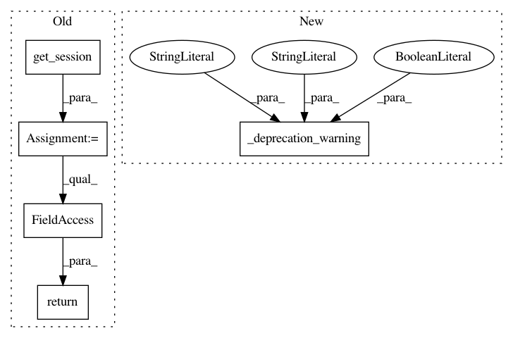

67c01455fe313a65cc65640e52892ed91e08ea8b,python/ray/tune/track/__init__.py,,trial_name,#,85
Before Change
This is not set if not using Tune.
_session = get_session()
return _session.trial_name
def trial_id():
Trial id for the corresponding trial of this Trainable.
After Change
def trial_name():
_deprecation_warning(
call="trial_name", alternative_call="get_trial_name", soft=True)
return session.get_trial_name()
def trial_id():
In pattern: SUPERPATTERN
Frequency: 3
Non-data size: 5
Instances
Project Name: ray-project/ray
Commit Name: 67c01455fe313a65cc65640e52892ed91e08ea8b
Time: 2020-05-16
Author: rliaw@berkeley.edu
File Name: python/ray/tune/track/__init__.py
Class Name:
Method Name: trial_name
Project Name: ray-project/ray
Commit Name: 67c01455fe313a65cc65640e52892ed91e08ea8b
Time: 2020-05-16
Author: rliaw@berkeley.edu
File Name: python/ray/tune/track/__init__.py
Class Name:
Method Name: trial_dir
Project Name: ray-project/ray
Commit Name: 67c01455fe313a65cc65640e52892ed91e08ea8b
Time: 2020-05-16
Author: rliaw@berkeley.edu
File Name: python/ray/tune/track/__init__.py
Class Name:
Method Name: trial_id